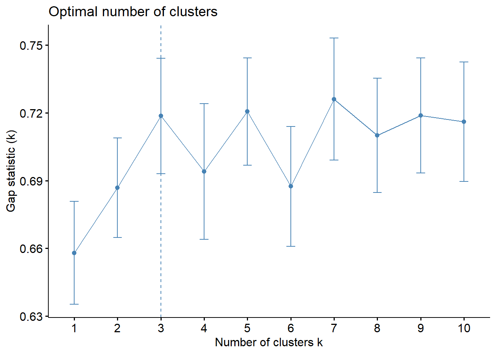

Klaszterezés és főkomponens elemzés
Az országok klaszterezése és a trendek megállapítása fontos feladat, hiszen a vírus lefutása földrajzilag változó a különböző területeken. Ezen kívül az alábbi elemzés célja az is, hogy egy-egy országegy főre jutó GDP és az egészségügyi kiadások GDP arányos értékével próbálja magyarázni a halálozási rátát. Ennek intuíciója, hogy a gazdagabb és egészségügyre többet költp országok jobban fel lehettek készülve egy esetleges járványra.
country_data_merge <- left_join(country_data, healthcare, by=c("countrycode"="Country Code"))
country_data_merge <- left_join(country_data_merge, gdp_per_cap, by=c("countrycode"="Country Code"))
country_data_merge <- left_join(country_data_merge, population, by=c("countrycode"="Country Code"))
#Mindegyik adatot népességarányosan számoltunk
country_data_merge[, c(2:8, 12:13)] <- country_data_merge[ , c(2:8,12:13)]/country_data_merge$Population*100000
#A 15 legnépesebb és leggazdagabb országot fogjuk plotolni, az átláhatóság kedvéért
biggest_countries <-
unique(c(head(country_data_merge[order(-country_data_merge$Population),]$`Country/Region`,15),
head(country_data_merge[order(-country_data_merge$GDPperCapita),]$`Country/Region`,15)))Adattáblánkban keresztmetszeti adatokat használtunk, július 27-i dátummal 165 országból. Az ekkori 100 000 főre vetített esetek, halálozások, aktív esetek és az egy héttel korábbi változás látható.
country_data_merge[,c("countrycode","WHO Region", "Country/Region")] <- NULL
country_data_merge$`Deaths / 100 Recovered` <- replace(country_data_merge$`Deaths / 100 Recovered`, is.infinite(country_data_merge$`Deaths / 100 Recovered`),NA)
rownames(country_data_merge) <- country_data$`Country/Region`
datatable(country_data_merge %>% mutate_if(is.numeric, ~round(., 1)), rownames=TRUE, filter = "none", options = list(pageLength=15, scrollX='400px', scrollY='400px', dom='ltp'), fillContainer = TRUE) %>% formatStyle(names(head(country_data_merge, 15)), font="bold", fontSize = '9.5pt')Ezeket az adatokat a főkomponens elemzéshez és a klaszterezéshez le kell normáljuk.
country_data_filter <- data.frame(scale(dplyr::select_if(country_data_merge, is.numeric)), check.names = FALSE)
rownames(country_data_filter) <- country_data$`Country/Region`Klaszterezés
A hierarchikus klaszterezésből látszódik, hogy a gazdagabb (high-income) országok alkotnak egy nagyobb csoportot, míg a szegényebb (low income) országok is egy csoportba tartoznak.
library(factoextra)
fviz_dend(hier, k=4, repel=TRUE, select.ind = list(name=biggest_countries), type="rectangle")Elsősorban 4 különböző csoportra osztottuk az országokat, azonban a Gap-statisztika maximalizálásakor a k=3 klaszter lett az optimális.
Ekkor pedig ennyi klaszterrel k-közép klaszterezést hajtottunk végre, azonban mindössze 3
változót felhasználva:
-100 esetre jutó halálozások száma
-egészségügyi kiadások aránya
-GDP per fő
Ezt olyan megfontolásból, hogy elsősorban az utóbbi két változó a halálozási arányra nyújthat magyarázatot, így ezzel akartuk párba állítani. Továbbá az optimális klaszterek száma divergált akkor, hogyha az összes változót felhasználnánk.
set.seed(42)
country_data_filter_na <- na.omit(country_data_filter)
fviz_nbclust(country_data_filter_na[,c("Deaths / 100 Cases", "HealthExpperGDP", "GDPperCapita")], FUNcluster=kmeans, method="gap_stat")
kkozep <- kmeans(country_data_filter_na[,c("Deaths / 100 Cases", "HealthExpperGDP", "GDPperCapita")], centers=3, nstart=100, iter.max=100)
kkozep$centers Deaths / 100 Cases HealthExpperGDP GDPperCapita
1 -0.39022271 -0.8793173 -0.3866760
2 1.00336778 1.1636760 1.9957319
3 -0.03975533 0.4357404 -0.2483867Főkomponens elemzés
Ez következhet az adatok minőségéből, valamint abból, hogy ezekbe az országokba korábban ért el a vírus a globalizáció miatt, így az első hullám alatti halálesetekben még nem volt annyira felkészülve az egészségügy. (Az előzetes magas arányú költekezés ellenére.)
Importance of components:
Comp.1 Comp.2 Comp.3 Comp.4 Comp.5
Standard deviation 2.4242839 1.4692307 1.4132999 1.06236800 0.95158166
Proportion of Variance 0.4026878 0.1479045 0.1368580 0.07733061 0.06204312
Cumulative Proportion 0.4026878 0.5505923 0.6874503 0.76478088 0.82682400
Comp.6 Comp.7 Comp.8 Comp.9 Comp.10
Standard deviation 0.81616357 0.73292048 0.6508623 0.60555793 0.46967173
Proportion of Variance 0.04564108 0.03680571 0.0290255 0.02512539 0.01511438
Cumulative Proportion 0.87246507 0.90927078 0.9382963 0.96342168 0.97853606
Comp.11 Comp.12 Comp.13 Comp.14 Comp.15
Standard deviation 0.39038422 0.330882505 0.226669757 1.299502e-08 0
Proportion of Variance 0.01044206 0.007501517 0.003520373 1.157058e-17 0
Cumulative Proportion 0.98897811 0.996479627 1.000000000 1.000000e+00 1A főkomponens elemzéshez a COVID-járvány összes adatát felhasználtuk, és a loadingok alapján megállapíthattuk az intuícióval ellentétes következtetést, hogy a gazdagabb országoknak magasabb a halálozási arányuk.
fokomp %>%
.$loadings %>%
unclass() %>%
data.frame() %>%
rownames_to_column() %>%
pivot_longer(-1) %>%
mutate(
name = str_remove(name, 'Comp.'),
name = factor(str_c('# ', name), levels = str_c('# ', 1:n_distinct(name)))
) %>%
ggplot +
aes(rowname, value, fill = value < 0) +
geom_hline(yintercept = 0) +
geom_col(color = 'black') +
coord_flip() +
scale_fill_discrete(guide = F) +
scale_y_continuous(labels = scales::percent) +
facet_wrap(~name, ncol = 3) +
labs(x = NULL, y = NULL, title = 'Főkomponensek')
Az első főkomponens leginkább a vírus július 27-ével bezárólag átlagos szintjét határozza meg.
A második főkomponens a halálozás arányát és a egészségügyi kiadások mértékét használja negatív előjellel, míg a gyógyultak számát pozitívval, így ennek a negatív szorzata mondható a halálozás mértékének.
A harmadik főkomponensben az aktív és az új esetek, valamint az előző héthez képesti változás szerepelnek negatív előjellel, tehát ez a járvány lecsengését mutatja.
country_data_filter_na <- cbind(country_data_filter_na, fokomp$scores[ ,1:3])
country_data_filter_na$Comp.2 <- -country_data_filter_na$Comp.2
colnames(country_data_filter_na)[18:20] <- c("Vírus általános elterjedése", "Halálozás aránya", "Jelenleg javuló állapot")fviz_pca_biplot(fokomp, habillage=country_data_filter_na$klaszter, repel = TRUE, select.ind = list(name=biggest_countries), geom.var = c("arrow", "text"), title = "Legnagyobb és leggazdagabb országok biplotja")